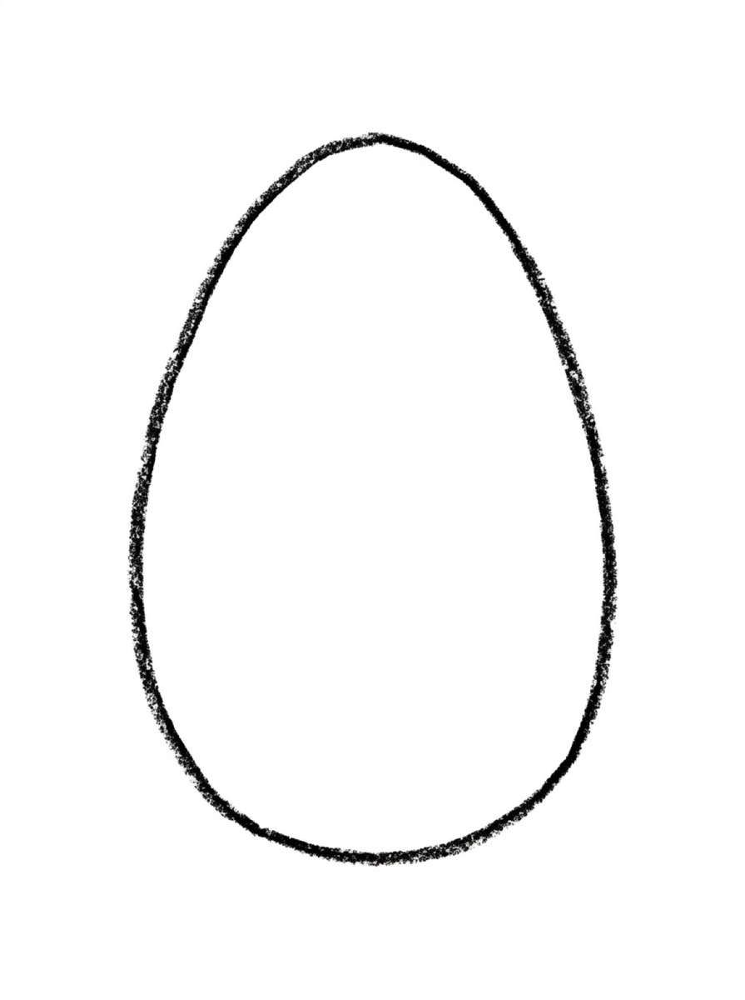
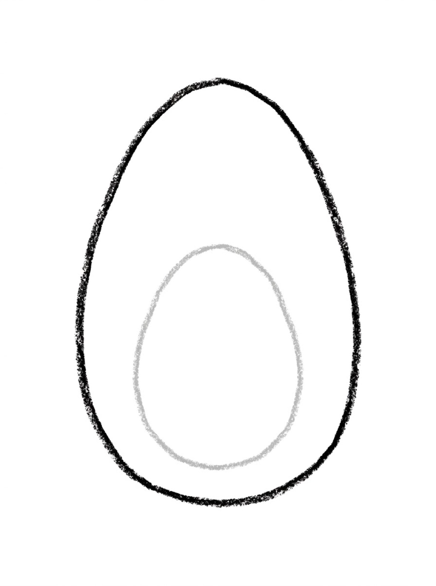
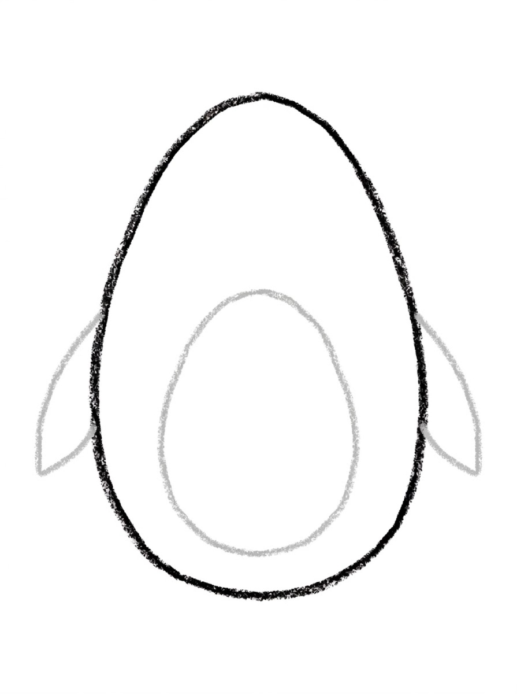
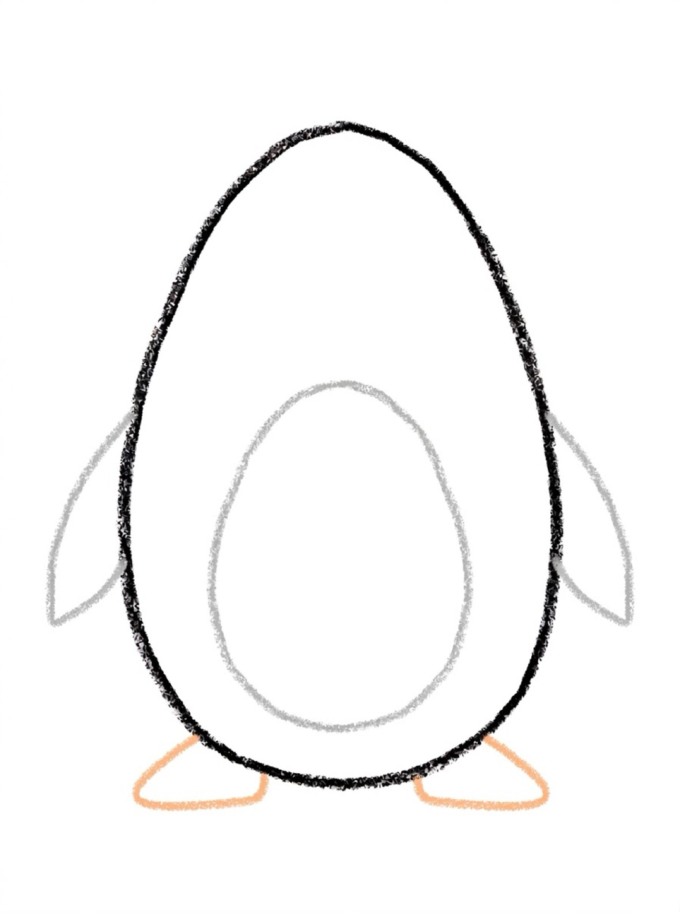
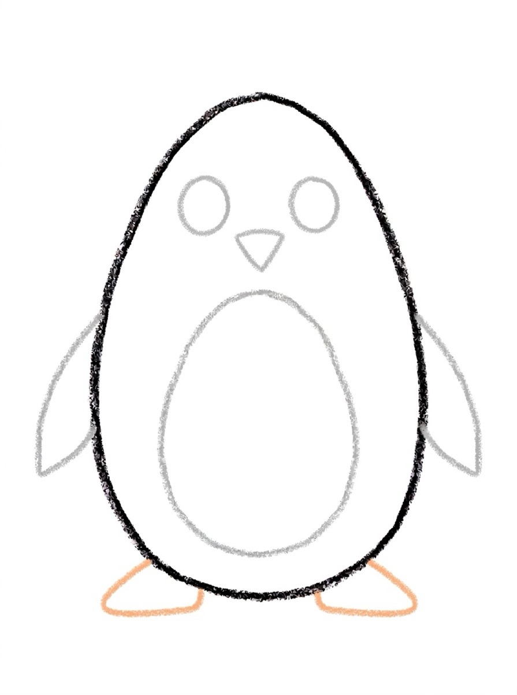

Penguin Drawing for Kids How to Draw a Penguin in 6 Easy Steps
Quick Answer
This free step-by-step tutorial shows kids how to draw a penguin in six easy steps: an oval body, a white belly, little flippers, orange feet, a cute face, and color. Download the printable PDF, grab crayons, and follow along together. Made for ages 4 and up — no signup needed, just print and draw. For kids asking about penguin how to draw, this is the friendly answer — one oval, six steps.
At a Glance
- Subject: How to draw a penguin
- Ages: 3+
- Steps: 6 steps
- Time: ~10 min
- Difficulty: Easy
- Supplies: Paper, crayons
Penguins are the tuxedo wearers of the animal kingdom, and that black-and-white pattern is what makes them so satisfying to color. The oval body plus white belly is basically a two-tone egg — impossible to get wrong.
✏️ How to Draw a Penguin: Step by Step
One step per box — draw each new part in a different color so kids can see exactly what changed.
Step 1: The Oval Body

Draw a tall upright oval for the penguin's body — like an egg standing up.
Step 2: The White Belly

Draw a smaller oval inside the lower half for the white belly patch.
Step 3: Flippers

Draw two small leaf-shaped flippers on the sides of the body.
Step 4: Orange Feet

Draw two small rounded triangles at the bottom for the orange feet.
Step 5: The Cute Face

Add two big round eyes and a small triangle beak in the upper part of the body.
Step 6: Color It In

Color the body black (leaving the belly white), the beak and feet bright orange!
📊 Penguin Drawing by Age
Every age can join in — just adjust the job.
| Age | What they can do | Tip |
|---|---|---|
| 3–4 | Trace the oval body and color it black | Help them leave the belly white — that's the fun challenge |
| 4–5 | Draw the body, belly, and flippers with help | Two ovals is the whole trick — practice nesting them |
| 6+ | Draw the whole penguin solo | Challenge: draw a penguin family of three different sizes |
🖨️ Download Your Free Penguin Drawing Printable
The printable lays out all 6 steps one per box, big enough for little hands — kids draw right alongside each step.
⬇️ Open Free Printable 🖨️ Print🎁 Free printable for ages 3+
🐧 Antarctic Waddle Parade
Draw three penguins in a row — big, medium, and tiny — all waddling the same direction. Add snow dots falling and an ice floe under their feet. The size progression teaches scale without a lesson, and the parade formation is irresistibly cute on the fridge.
🐧 Penguins in the Real World
Penguins are birds that traded flying in the air for flying underwater: their wings became flippers, and they swim faster than most kids can run. Almost all wild penguins live in the southern half of the world — the famous emperor penguins endure the Antarctic winter, where fathers balance the egg on their feet for months while the mothers go to sea.
Penguins look dressed for a party, and their black-and-white coloring is actually camouflage: dark from above against the deep water, white from below against the bright surface. On land they waddle, hop, and toboggan on their bellies down snowy slopes — which looks like play and works like transport. Ask your child whether their penguin is a swimmer, a waddler, or a toboggan champion. The ice party invites how to draw a seal to swim over and a how to draw a snowflake to fall on both.
What You'll Need to Draw a Penguin
Black for the body, white for the belly — the tuxedo look is essential. Orange or yellow for the beak and feet. The white belly has to stay uncolored, so kids need to plan around it (color the black first, leave the oval empty). White paper works, but light blue gives an icy Antarctic feel.
What They're Learning
Penguin how to draw teaches a real art idea along the way: negative space. Penguins are a masterclass in negative space — the white belly is defined by the black drawn around it, not by drawing it directly. That's a genuinely advanced concept made simple. The oval body (taller than wide) also contrasts with the round bodies in other tutorials, expanding their sense of proportion. Small flippers are good detail work.
Make It Yours
Penguin how to draw is just the start — after the basic bird, the variations are the fun. Draw it sliding on its belly with motion lines, or standing on an ice floe with water around it. A baby penguin (fluffy gray instead of black) next to a parent is heart-melting. Add snowflakes falling, fish in the water, or a whole colony. An emperor penguin with the orange ear patches is a nice realistic touch for older kids.
🛒 Our Favorite Drawing Supplies
These are the supplies we reach for in our own home — washable (because kids), quality paper, and enough colors to avoid fights.
As an Amazon Associate, MomYouNeedThis earns from qualifying purchases — at no extra cost to you.
❓ Penguin Drawing FAQs
What is the easiest way for a kid to draw a penguin?
Start tall: one upright oval makes the whole body, flippers hug its sides, and triangle feet and a triangle beak finish the ends. Leave a big white tummy when you color — black body, white belly, orange beak and feet — because that two-tone pattern is what reads as 'penguin' from across the room.
What age can kids start learning to draw a penguin?
Most kids can draw the nested ovals around age 4 with help, and the full penguin solo by 5 or 6. The two-tone coloring is the real skill here — staying inside the belly line.
What supplies do we need to draw a penguin?
Paper and crayons or markers — black, white (leave the paper showing), and bright orange. The free printable PDF lays out all six steps one per box so kids can draw right alongside each step.
Is the penguin drawing printable really free?
Yes — every printable on MomYouNeedThis is 100% free to download and print. No signup, no payment, just tap the download button.
Where can I find penguin how to draw for kids?
Right here — the steps and the free printable PDF are both on this page, no signup needed. Penguins make a kind first 'real animal' drawing: the white belly oval does most of the work, and the rest is small, satisfying additions.
How do I print the penguin drawing tutorial?
Open the PDF and print at 100% scale (not 'fit to page') so the drawing boxes stay big enough for little hands. The printable is designed to stay large — never shrunk to force a fit.
How does drawing penguins by step by step work?
One piece at a time. Each picture shows the whole penguin so far with the newest part in a fresh color, so your child copies the colored bit, compares, and waddles on to the next step — the penguin assembles itself gradually instead of arriving all at once.
📚 Keep Exploring
- ✏️ All 76 Drawing Tutorials 76 free step-by-step drawing tutorials for kids.
- 🐾 Animal Coloring Free printable animal coloring pages for little learners.
- ✏️ Drawing Practice Free printable drawing pre-writing worksheet for toddlers.